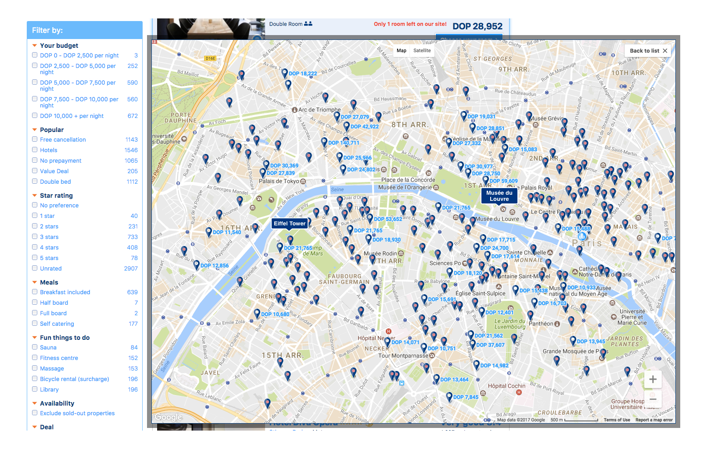

Presenting 3 ideas of actionable improvements that can be made to the site.
← Go backLeisure Customers. Couples traveling for vacation abroad with no children.
We have never been in Paris, we have been researching about the city and learned about some landmarks we want to know. We want to book a hotel close to the area we’ll be exploring during our trip. When we see the map, we can’t really tell what is close to what and orientate as we have never been there and we don’t know the area. How could we know what accommodation options do we have closest to the areas we want to explore in our trip?
Help us find a place to stay close to the areas we will be exploring, help us orientate in a foreign city we have never been before.
I believe that [ Bringing a list of the most popular landmarks to the search page in which users can interact to filter properties under the criteria of proximity to the chosen landmarks to help them explore their options ] for [ couples traveling for vacation ]
because [ of the need to explore accommodation options close to landmarks ]
will lead to [ better navigate the broad offer of options booking.com has, based on their proximity to places they choose ].
I’ll now I was sucessful if [ there is an increase of bookings from people coming from this feature (quantitative data)].
This will be good for customers, partners and our business because [ people will be making better decisions to book the accommodation that better suits their needs, removing friction from the booking process and increasing the possibility of booking ].
If the hypothesis is validated, keep milking the cows and test what happens if we can extend the implementation to the map view (see idea below).
If the hypothesis is not validated, iterate or pivot. Take a look at qualitative data to answer why people is not using the feature.
If the results of test are uncertain, iterate. Reshape ideas.
